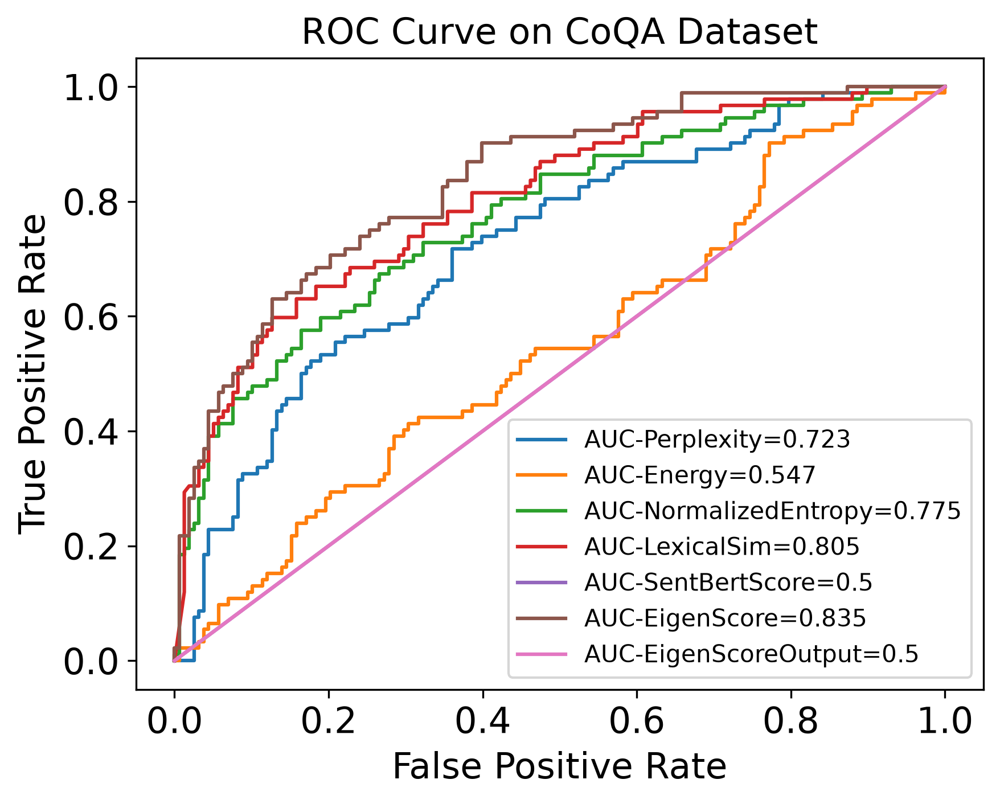

Team: Aayaan Ali Khan (202411001) · Shlok Bhavsar (202411018) · Prapti Chotaliya (202411030)
Indian Institute of Information Technology Vadodara
LLMs such as Llama or ChatGPT write fluent text, but they sometimes state things that are false, in the same confident tone they use for true statements. This is called hallucination. A reader cannot tell a hallucinated answer from a correct one by looking at it. That is dangerous wherever people rely on the answer: education, search, medicine, law.
If you ask a student the same question several times and they really know it, they give the same answer every time. If they are guessing, the answers change. We do the same with the model: ask 10 times, then measure how much the answers disagree.
The clever part: we do not compare the words of the answers. We compare the model’s internal representation of each answer, a list of numbers that captures its meaning. “1932” and “in nineteen thirty-two” share no words, but they mean the same thing.
| From the research paper (INSIDE, ICLR 2024) | Done by us |
|---|---|
| The EigenScore idea and formula | Got the authors’ broken code running: fixed 12 blocking bugs + 1 hidden scoring bug |
| The feature-clipping idea (described in words only) | Implemented feature clipping from scratch; it was missing from the released code |
| Experiments on large GPUs | Made a 7B model run on an 8 GB laptop GPU (4-bit weights, one-layer capture) |
| — | 8 automated tests, a full experiment on 250 CoQA questions, statistical analysis (bootstrap) |
| — | Report, explainer video with voiceover, viva guide, design-project poster |
| — | A proposed improvement (multi-layer EigenScore) with a ready experiment plan |
| Stage | What happened | Status |
|---|---|---|
| Paper selection | Chose INSIDE (ICLR 2024) on LLM hallucination detection | DONE |
| Implementation | Repaired code, added feature clipping, 8 GB GPU support, tests | DONE |
| Experiment | 250 CoQA questions, with and without clipping, on an RTX 4060 laptop | DONE |
| Mid-semester (CS367) | IEEE-format report, explainer video with 3 voices, viva | DONE |
| Design-project poster | Formal A2 landscape poster, results verified | DONE |
| Extension | Multi-layer EigenScore + normalisation + hybrid; plan and script ready | TO RUN |
You only need these few ideas to understand the whole project.
| Term | Plain meaning |
|---|---|
| LLM | Large language model. It writes text one small piece at a time, always predicting the next piece. We use Llama-2-7B (Meta; 7 billion parameters). |
| Token | One small piece of text: a word or part of a word. |
| Layer | The model is a stack of processing stages. Llama-2-7B has 32 layers. Text enters at the bottom; the next-word prediction comes out of the top. |
| Hidden state / embedding | At every layer and every token, the model keeps a list of 4,096 numbers describing what it currently “understands”. Answers with similar meaning get similar lists. This is the internal representation we read. |
| Sampling | Generating with some randomness so the same question can give different answers. Controlled by temperature (0.5 = moderate randomness) and top-p (0.99 = ignore the least likely 1% of words). |
| K | Number of answers sampled per question. We use K = 10. |
| Covariance matrix | A table describing how a set of items vary together. For our 10 answers it is a 10 × 10 table. |
| Eigenvalues / eigenvectors | For a cloud of points: eigenvectors are its main directions of spread; eigenvalues are how much spread there is along each one (like the length, width and height of the cloud). |
| Activation / neuron | One of the 4,096 numbers inside a layer. An “extreme activation” is one that is unusually large. |
| 4-bit quantisation (NF4) | Storing each model weight with 4 bits instead of 16 so the model needs about a quarter of the memory. Done with the bitsandbytes library. |
| CoQA | The question-answering dataset we test on: a short story followed by questions about it (Stanford, 2019). |
| ROUGE-L | A 0–1 score for how much two texts overlap in words (longest common word sequence). We count an answer as correct if its ROUGE-L with the reference answer is above 0.5. |
| AUROC | How we grade a detector: the probability that, given one wrong and one correct answer, the detector gives the wrong one the more suspicious score. 50% = coin toss, 100% = perfect. |
| Bootstrap / 95% CI | A way to check if a difference is real: re-sample our questions 10,000 times and see how much the result moves. The middle 95% of results is the confidence interval. |
det = determinant = product of eigenvalues = the “volume” of the cloud of answers. Taking log and averaging turns the product into an average.
Three answers (K = 3), each with 4 numbers (d = 4), using synthetic values:
Z = [1.0 0.2 0.6 0.4]
[1.1 0.2 0.6 0.4]
[1.0 0.3 0.6 0.4]
Eigenvalues of C + 0.001·I: 0.362, 0.0017, 0.0011Z = [1.0 0.2 0.6 0.4]
[0.1 0.9 0.3 0.7]
[0.5 0.4 1.0 0.0]
Eigenvalues of C + 0.001·I: 0.306, 0.114, 0.0022When answers agree, one eigenvalue dominates and the rest collapse to about α = 0.001, which drags the average log down. In the real system everything is the same except the sizes: Z is 10 × 4,096, C is 10 × 10, and there are 10 eigenvalues.
The blind spot: if the model is confidently wrong, it repeats the same wrong answer 10 times. The answers agree, so EigenScore is low and the error is trusted. These are called self-consistent hallucinations.
The fix: the paper observed that a few neurons in the penultimate layer (layer 31) sometimes take extreme values, which it links to over-confidence. Feature clipping caps them while the model is generating:
torch.clamp). Values inside are untouched.| Method | What it measures | Weakness |
|---|---|---|
| Perplexity | How unsure the model was about each word of one answer | Sure of each word ≠ correct |
| LN-Entropy | Average uncertainty over the 10 answers, divided by length | Word-level only, not meaning |
| Energy | A score from raw model outputs, built for detecting unusual inputs | Not designed for this task |
| Lexical Similarity | Word overlap (ROUGE-L) between the 10 answers | Compares words, not meaning |
The authors published their code on GitHub (alibaba/eigenscore, commit ea8062a). It could not run: its setup instructions were empty, file paths pointed to the authors’ own machine, and several errors stopped it at start-up. The feature-clipping part of the paper was not in the code at all. We kept every original file next to our fixed version with the suffix .orig.
| # | File | Problem | Fix |
|---|---|---|---|
| 1 | pipeline/generate.py | Imports a module (dataeval.TruthfulQA) that does not exist: crash at start | Import removed |
| 2 | func/metric.py | np.float (removed in NumPy 1.24) used 14 times: every EigenScore function crashed | Replaced by np.float64 |
| 3 | _settings.py | Data path hard-coded to the authors’ disk (/disk1/chenchao/…) | Repo-relative paths, overridable by environment variables |
| 4 | pipeline/generate.py | Opens the log file before its folder exists | Folder created first |
| 5 | func/evalFunc.py | Imports only work when run from inside func/ | Package-qualified imports |
| 6 | func/metric.py | Loads a heavy library (selfcheckgpt) only used by dead code | Import moved inside the function |
| 7 | pipeline/generate.py | Builds a BERTScore model from a missing path for a disabled metric | Removed |
| 8 | dataeval/* | Debugger ipdb imported at the top of files | Commented out |
| 9 | func/plot.py | Saves to a missing folder, then freezes waiting for a screen | No pop-up, folder created |
| 10 | func/evalFunc.py | File-name parsing crashes on normal paths | Whole path passed through |
| 11 | func/metric.py | .to("cuda") hard-coded 16 times, ignoring the device option | Device taken from the data |
| 12 | dataeval/load.py | DEFAULT_DEVICE = 'cuda:7' (a GPU we don’t have) | Left as is: file not used by our pipeline |
File func/feature_clip.py, class FeatureClipper: a ring buffer of the last 3,000 tokens (when full, the oldest row is overwritten), per-neuron percentile thresholds recomputed whenever the bank changes, a 256-token warm-up, and a PyTorch forward hook attached to layer 31. A forward hook is a function PyTorch calls every time that layer produces output; ours replaces the output with its clipped version, so clipping changes what the model generates.
| Problem | Solution |
|---|---|
| Llama-2-7B needs ~13.5 GB in 16-bit | 4-bit NF4 weights (--load_in_4bit): ~3.9 GB |
| Keeping all 33 hidden-state tensors for every token ran out of memory on long CoQA stories | --low_memory: a hook (MiddleLayerCapture) keeps only layer 16; a test proves results are identical |
| Generating many answers per pass is memory-heavy | --num_return_sequences: e.g. 2 answers per pass × 5 passes, still K = 10 in total |
test_imports: every module imports.test_thresholds_match_numpy: clip limits equal numpy.percentile.test_clip_is_eq8: clipping matches the paper’s equation exactly.test_ring_buffer_and_warmup: memory bank wraps around correctly; no clipping before warm-up.test_eigenscore_pooling_equivalence: batched scoring = original scoring.test_eigenscore_separates_consistent_from_diverse: similar answers score lower than diverse ones.test_low_memory_capture_equivalence: the memory-saving hook gives identical vectors.test_layer_discovery: finds the right layers for LLaMA, OPT, Falcon and GPT-2.cs367-inside-eigenscore/ ├── INSIDE_paper_...pdf the research paper ├── report/ mid-semester report (LaTeX + PDF) ├── source_code/ │ ├── pipeline/generate.py MAIN SCRIPT: sample answers, compute scores │ ├── func/metric.py EigenScore + the 4 baseline scores │ ├── func/feature_clip.py OURS: FeatureClipper + MiddleLayerCapture hooks │ ├── func/evalFunc.py labels answers right/wrong, computes AUROC │ ├── func/plot.py ROC curve plots │ ├── models/_load_model.py model loading (incl. 4-bit) │ ├── dataeval/ dataset loaders (CoQA, SQuAD, NQ, TriviaQA) │ ├── tests/test_setup.py the 8 tests │ ├── extension/ FUTURE WORK: run_extension.py + PLAN.md │ ├── run.sh one-command generation + evaluation │ ├── README.md · CHANGES.md · RESULTS.md · requirements.txt └── presentation/ video, slides, viva guide, posters, handbook
dataeval/coqa.py).model.generate(do_sample=True, temperature=0.5, top_p=0.99, top_k=10, num_return_sequences=…), repeated until there are 10. If clipping is on, the layer-31 hook clips activations at every step..pkl file; afterwards func/evalFunc.py labels each answer (ROUGE-L > 0.5) and computes AUROC for every method.func/metric.py)# one vector per answer: middle layer, last generated token
selected_layer = int(len(hidden_states[0]) / 2) # 33 entries -> 16
embeddings[ind, :] = hidden_states[tok][selected_layer][ind, 0, :]
# embeddings: shape (10, 4096)
def getEigenScoreFromEmbeddings(embeddings, alpha=1e-3):
CovMatrix = torch.cov(embeddings.float()).cpu().numpy().astype(np.float64)
# CovMatrix: shape (10, 10)
u, s, vT = np.linalg.svd(CovMatrix + alpha*np.eye(CovMatrix.shape[0]))
# s: the 10 eigenvalues
return np.mean(np.log10(s)), s
For a symmetric covariance matrix, the singular values from SVD are exactly its eigenvalues, which is why the code uses svd.
func/feature_clip.py)def clip(self, h): # h: (..., 4096) activations of layer 31
self.update(h) # push into the 3,000-token ring buffer
if not (self.enabled and self.ready): # warm-up: fewer than 256 tokens seen
return h
if self._stale:
self._recompute_thresholds() # per-neuron 0.2% / 99.8% percentiles
return torch.clamp(h, min=self._h_min, max=self._h_max)
def attach(self, model):
penultimate = _get_decoder_layers(model)[-2] # layer 31 of 32
def hook(module, args, output):
if isinstance(output, tuple):
return (self.clip(output[0]),) + tuple(output[1:])
return self.clip(output)
return penultimate.register_forward_hook(hook)
models/_load_model.py)Short names map to HuggingFace models, e.g. llama2-7b-hf → NousResearch/Llama-2-7b-hf (an ungated copy of Meta’s Llama-2-7B). With --load_in_4bit the model is loaded through bitsandbytes with bnb_4bit_quant_type='nf4'.
Python 3.11 · PyTorch · HuggingFace transformers · bitsandbytes (4-bit) · NumPy · scikit-learn (roc_curve, auc) · rouge_score · matplotlib (plots).
cd source_code uv venv --python 3.11 .venv && source .venv/bin/activate uv pip install torch --index-url https://download.pytorch.org/whl/cu124 uv pip install -r requirements.txt python -m tests.test_setup # should print 8 x [ok]
CoQA (coqa-dev-v1.0.json) goes in data/datasets/. Paths can be changed with EIGENSCORE_DATA_DIR, EIGENSCORE_MODEL_PATH and EIGENSCORE_OUTPUT_DIR.
python -m pipeline.generate --model llama2-7b-hf --dataset coqa \
--load_in_4bit --low_memory --feature_clip --no_sentsim \
--num_generations_per_prompt 10 --num_return_sequences 2 \
--fraction_of_data_to_use 0.03132 --seed 2023 --project_ind 10
python -m func.evalFunc data/output/llama2-7b-hf_coqa_10/0.pkl --correctness rouge
0.03132 × 7,983 ≈ 250 questions. The no-clipping run is the same command without --feature_clip. run.sh wraps the same steps (it defaults to 5 answers per pass).
| Flag | Our value | Meaning |
|---|---|---|
--num_generations_per_prompt | 10 | K, answers per question |
--num_return_sequences | 2 | answers generated per GPU pass (memory saver) |
--temperature / --top_p / --top_k | 0.5 / 0.99 / 10 | sampling randomness |
--load_in_4bit | on | 4-bit NF4 weights |
--low_memory | on | capture only layer 16 |
--feature_clip | on / off | enable clipping on layer 31 |
--clip_percentile / --memory_bank_size | 0.2 / 3000 | clipping limits and memory bank size |
--no_sentsim | on | skip the sentence-similarity model (unavailable to us) |
--max_new_tokens | 256 | maximum answer length |
--seed | 2023 | random seed (same questions in both runs) |
Hardware used: NVIDIA RTX 4060 laptop GPU, 8 GB. Speed: about 6 seconds per question. A full CoQA run (7,983 questions) would take about 13 hours per setting.
| Item | Value |
|---|---|
| Model | Llama-2-7B, 4-bit NF4 |
| Dataset | CoQA, 250 questions (seed 2023) |
| Answers per question | K = 10 (temperature 0.5, top-p 0.99, top-k 10) |
| Correct if | ROUGE-L with the reference > 0.5 |
| Runs | two runs on identical questions: without and with feature clipping |
| Model’s own accuracy | 36.8%: 92 of 250 answers correct, 158 wrong |
These numbers are for internal understanding and the CS367 course, where comparing with the paper was the point. The design-project poster shows only our own numbers.
| Method | Paper (LLaMA-7B) | Ours | Ours + clipping |
|---|---|---|---|
| EigenScore | 80.8 | 83.5 | 82.5 |
| Lexical Similarity | 77.8 | 80.5 | 79.3 |
| LN-Entropy | 73.6 | 77.5 | 77.3 |
| Perplexity | 68.3 | 72.3 | 71.4 |
| Energy | 54.7 | 54.7 | 53.1 |
The ranking is identical to the paper’s: EigenScore > Lexical Similarity > LN-Entropy > Perplexity > Energy. The paper’s 80.8 already includes clipping, so the like-for-like comparison is our 82.5.

| Comparison | Difference | 95% CI | Meaning |
|---|---|---|---|
| EigenScore − Lexical Similarity | +2.9 | [−0.6, +6.5] | EigenScore better in 95% of resamples; paper reports ~+3 |
| Effect of feature clipping on EigenScore | −1.0 | [−4.7, +2.6] | Inconclusive: interval contains 0 and the paper’s +1.1 |
Clipping was verified to be active: 13,749,839 of 1,159,186 × 4,096 activations were clipped = 0.29% (at most ~0.4% expected from 0.2% per side). Its effect is simply too small to measure with 250 questions; the paper used 7,983.
The project is used for two courses, and they frame it differently:
| Course | Framing | Delivered |
|---|---|---|
| CS367 (AI course, research paper) | Implement and reproduce a recent AI paper by mid-sem; propose an improvement for end-sem. Comparing with the paper is expected. | IEEE report, explainer video with voiceover, viva preparation guide |
| Design Project | Presented as our system: problem → our solution → our results. Single-layer EigenScore only; no paper comparison; the method is credited in References. | Formal A2 landscape poster for the poster session |
| Deliverable | Location (repo) |
|---|---|
| Mid-sem report (IEEE format) | report/report.pdf (source report/report.tex) |
| Explainer video (4:00, all three voices) | generated from presentation/video/; final file inside_final_trimmed.mp4 (sent in chat; not stored in git because of size) |
| Voiceover script and cue sheet | presentation/video/SCRIPT.md |
| Viva preparation guide | presentation/viva/INSIDE_viva_guide.pdf |
| Design-project poster (final) | presentation/poster/formal_poster_A2.pdf |
| Earlier slide deck draft | presentation/deck/ |
| This handbook | presentation/handbook/project_handbook.pdf |
An animated, white-theme explainer (problem → idea → maths → clipping → our code vs. theirs → setup → results → clipping result → end-sem plan), with a caption under every animation and split-screen paper-vs-ours comparisons. The voiceover order is Prapti → Aayaan → Shlok. Each recorded line was transcribed and placed at its exact cue time automatically (scripts voice_align.py, voice_build.py). The final cut starts directly at the problem slide.
Sections: Problem Statement · The Idea · Intuition (eigenvalue figure) · Why Internal States, Not Words · Illustrative Example (K = 3, d = 4) · Illustrative vs. Full-Scale Experiment · Which Layer We Read, and Why · Engineering Challenges We Solved · Python Workflow · Results · Conclusion & Limitations · References. Every number on it was verified against the code and results files.
| Method | Idea | Fixes |
|---|---|---|
| M1. Multi-layer EigenScore (main) | Compute EigenScore at every layer in a band of middle layers, layers 8–24 of 32 (floor(L/4) to floor(3L/4)), and average them. | Removes the hand-picked layer; averages out per-layer noise |
| M2a. L2-normalised | Scale each answer vector to length 1 before the covariance. | Loud dimensions dominating |
| M2b. Standardised (secondary) | Standardise each dimension using statistics from previous questions only (like the clipping memory bank). | Loud dimensions dominating |
| M3. Confidence-aware hybrid | Average the rankings of multi-layer EigenScore and LN-Entropy (equal weight). | Confident mistakes: word-level confidence still carries signal when answers agree |
| Stretch: adaptive K | Sample answers one at a time and stop once the score is clearly low or high. | Cost of 10 answers per question |
| Item | Setting |
|---|---|
| Model | Llama-2-7B, 4-bit, RTX 4060 8 GB |
| Datasets | CoQA, TriviaQA, NQ-Open: 1,000 questions each (seed 2023) |
| Sampling | K = 10, temperature 0.5, top-p 0.99, top-k 5 (the paper’s value) |
| Features saved | last-token hidden state at every layer for every sample, so all methods are computed from the same answers |
| Primary test | M1 vs. original EigenScore, paired bootstrap 10,000 resamples; claim an improvement only if the 95% CI is above 0 |
| Extra analyses | per-layer AUROC curve; detection rate on consistently-wrong answers |
source_code/extension/PLAN.md.source_code/extension/run_extension.py (smoke-tested on CPU only).extension, and handed to the Claude session on the RTX 4060 laptop.| What | Where |
|---|---|
| GitHub repository | github.com/Akay-74/cs367-inside-eigenscore |
| Branch: original submission | main |
| Branch: all presentation work | claude/cs307-presentation-video-plan-4dgcht |
| Branch: extension study | extension |
| The paper | INSIDE_paper_Chen_et_al_ICLR2024.pdf |
| Every bug fix explained | source_code/CHANGES.md |
| Results with statistics | source_code/RESULTS.md |
| Setup and run guide | source_code/README.md |
| Extension plan and script | source_code/extension/PLAN.md, run_extension.py |
| Report | report/report.pdf |
| Video sources and scripts | presentation/video/ |
| Viva guide | presentation/viva/INSIDE_viva_guide.pdf |
| Posters | presentation/poster/ (final: formal_poster_A2.pdf) |
Original paper: C. Chen, K. Liu, Z. Chen, Y. Gu, Y. Wu, M. Tao, Z. Fu, J. Ye, “INSIDE: LLMs’ Internal States Retain the Power of Hallucination Detection,” ICLR 2024. Official code: github.com/alibaba/eigenscore.
| Method | |
|---|---|
| Answers per question (K) | 10 |
| Temperature / top-p / top-k | 0.5 / 0.99 / 10 |
| Layer read | 16 of 32 |
| Vector size | 4,096 |
| Matrix Z / covariance | 10×4,096 / 10×10 |
| α | 0.001 |
| Clipping layer | 31 of 32 |
| Clipping percentiles | 0.2% / 99.8% |
| Memory bank / warm-up | 3,000 / 256 tokens |
| Correct if ROUGE-L | > 0.5 |
| Experiment | |
|---|---|
| Model | Llama-2-7B, 4-bit |
| Questions | 250 CoQA |
| Seed | 2023 |
| Model accuracy | 36.8% (92 / 250) |
| EigenScore AUROC | 83.5% |
| With clipping | 82.5% |
| Values clipped | 0.29% |
| Memory: 16-bit → 4-bit | 13.5 → 3.9 GB |
| Speed | ≈ 6 s / question |
| Bugs fixed / tests | 12 (+1) / 8 of 8 |